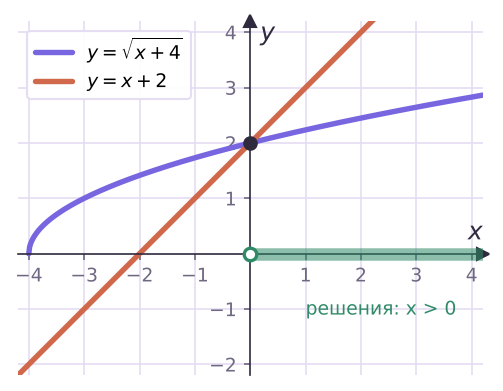
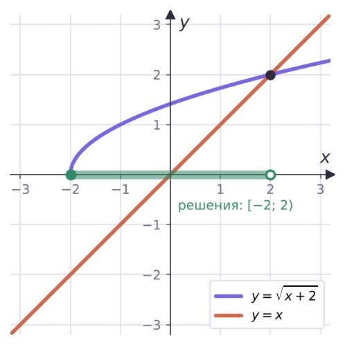

Теория
Неравенства, в которых неизвестное стоит под знаком корня, называют иррациональными: √(5 − x) < 4, √(x + 3) > x + 1, √(x² − 3x) ≤ 2. Решать их будем так же, как уравнения из урока 9, — избавляясь от корня возведением в квадрат. Но у неравенств есть подвох, и с него начнём.
Неравенство, в котором неизвестное содержится под знаком корня, называется иррациональным.
Когда неравенство можно возводить в квадрат
Верно −3 < 2. Возведём в квадрат: 9 < 4 — неверно! Знак неравенства «сломался», потому что левая часть была отрицательной.
Если обе части неравенства неотрицательны, то при возведении в квадрат получается равносильное неравенство с тем же знаком: для a ≥ 0, b ≥ 0 неравенства a < b и a² < b² равносильны.
Почему. Функция y = t² на промежутке [0; +∞) возрастает: большему неотрицательному числу соответствует больший квадрат, и наоборот. Для отрицательных чисел это уже не так — отсюда и пример с −3 и 2.
И ещё два факта из урока 9 работают здесь постоянно: корень существует, только если подкоренное выражение ≥ 0 (область определения неравенства), и сам корень всегда ≥ 0.
Тип 1. Корень меньше положительного числа: √f < c
Обе части неотрицательны (там, где корень определён), значит, можно возводить в квадрат. Но условие «корень определён» обязательно записать отдельно:
√f < c (c > 0) ⇔ { f ≥ 0; f < c² }.
Реши неравенство √(x − 3) < 2.
Область определения: x − 3 ≥ 0, x ≥ 3. Возводим в квадрат: x − 3 < 4, x < 7.
Оба условия вместе: 3 ≤ x < 7. Ответ: [3; 7).
Самая частая ошибка — потерять область определения и записать ответ x < 7. Проверь: при x = 0 получаем √(−3) — такого числа нет, значит, 0 не может быть решением. В неравенствах «корень меньше…» система с f ≥ 0 обязательна.
Реши неравенство √(x² − 5x) < 6.
Система: x² − 5x ≥ 0 и x² − 5x < 36.
Первое: x(x − 5) ≥ 0, то есть x ≤ 0 или x ≥ 5. Второе: x² − 5x − 36 < 0, (x − 9)(x + 4) < 0, −4 < x < 9.
Пересекаем на числовой прямой: (−4; 0] и [5; 9). Ответ: (−4; 0] ∪ [5; 9).
Тип 2. Корень больше неотрицательного числа: √f > c
√f > c (c ≥ 0) ⇔ f > c².
Почему здесь не нужно отдельно писать f ≥ 0. Если f > c², а c² ≥ 0, то f автоматически положительно — область определения выполнится сама.
Реши неравенство √(2x + 1) > 3.
2x + 1 > 9, x > 4. Ответ: (4; +∞).
Если справа отрицательное число или ноль
- √f < −2 — решений нет: неотрицательное число не может быть меньше отрицательного.
- √f > −2 — верно для всех x из области определения: решение f ≥ 0.
- √f ≤ 0 — только когда √f = 0, то есть f = 0.
Реши неравенства: а) √(3x − 6) < −1; б) √(x + 6) ≥ −3.
а) Корень не бывает отрицательным — решений нет.
б) Неравенство верно везде, где корень определён: x + 6 ≥ 0. Ответ: [−6; +∞).
Не возводи в квадрат, если справа отрицательное число: из √(x + 6) ≥ −3 «получится» x + 6 ≥ 9, x ≥ 3 — и потеряются все решения от −6 до 3.
Тип 3. Корень меньше выражения: √f < g
Теперь справа стоит выражение с x, его знак заранее неизвестен. Рассуждаем: слева число ≥ 0, и оно меньше g. Значит, g обязано быть положительным. А когда обе части неотрицательны, можно возводить в квадрат.
√f < g ⇔ { f ≥ 0; g > 0; f < g² }.
Реши неравенство √(x + 4) < x + 2.
Система: x + 4 ≥ 0 (x ≥ −4); x + 2 > 0 (x > −2); x + 4 < (x + 2)², то есть x² + 3x > 0, x < −3 или x > 0.
Все три условия вместе: x > 0. Ответ: (0; +∞).

Тип 4. Корень больше выражения: √f > g
Здесь два случая — смотря какой знак у правой части.
- g < 0. Тогда неравенство верно само: неотрицательный корень больше отрицательного числа. Нужно только, чтобы корень существовал: f ≥ 0.
- g ≥ 0. Обе части неотрицательны — возводим в квадрат: f > g².
√f > g ⇔ { g < 0; f ≥ 0 } или { g ≥ 0; f > g² }. Ответ — объединение решений двух систем.
Реши неравенство √(x + 2) > x.
Случай 1: x < 0 и x + 2 ≥ 0 — получаем [−2; 0).
Случай 2: x ≥ 0 и x + 2 > x², то есть x² − x − 2 < 0, −1 < x < 2. С учётом x ≥ 0: [0; 2).
Объединяем: [−2; 0) ∪ [0; 2) = [−2; 2). Ответ: [−2; 2).

В типе 4 часто забывают случай g < 0 и сразу возводят в квадрат: получается только (−1; 2), а решения от −2 до −1 теряются. Проверь: при x = −1,5 слева √0,5 ≈ 0,7, справа −1,5 — неравенство верно.
Корень меньше корня: √f < √g
Обе части неотрицательны, возводим в квадрат: f < g. Остаётся условие существования меньшего корня: f ≥ 0 (тогда и g > f ≥ 0). Итог: √f < √g ⇔ 0 ≤ f < g.
Графический способ
Рисуем графики левой и правой частей. Решения неравенства «левая < правой» — те x, при которых график левой части лежит ниже. Так сразу видно ответ примеров 5 и 6 на рисунках выше: точку пересечения находим из уравнения, а промежуток — по рисунку.
| Неравенство | Равносильно | Почему |
|---|---|---|
| √f < c, c > 0 | f ≥ 0, f < c² | обе части ≥ 0; корень должен существовать |
| √f > c, c ≥ 0 | f > c² | f ≥ 0 выполнится само |
| √f < c, c ≤ 0 | решений нет | корень ≥ 0 |
| √f < g | f ≥ 0, g > 0, f < g² | корень меньше g ⇒ g > 0 |
| √f > g | {g < 0, f ≥ 0} или {g ≥ 0, f > g²} | знак g неизвестен — два случая |
| √f < √g | 0 ≤ f < g | обе части ≥ 0 |
Задачи урока
Реши в тетради. Ответы разберём на занятии.
Тест к уроку
Домашнее задание
Задачи Д1–Д6 ниже. У каждого неравенства подписать тип (корень и число, корень и выражение, корень и корень) и объяснить, можно ли сразу возводить в квадрат. Выучить схемы четырёх типов из таблицы урока.